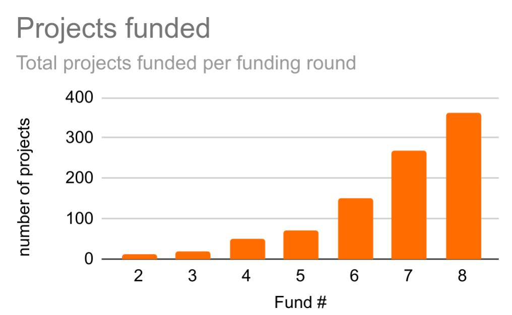
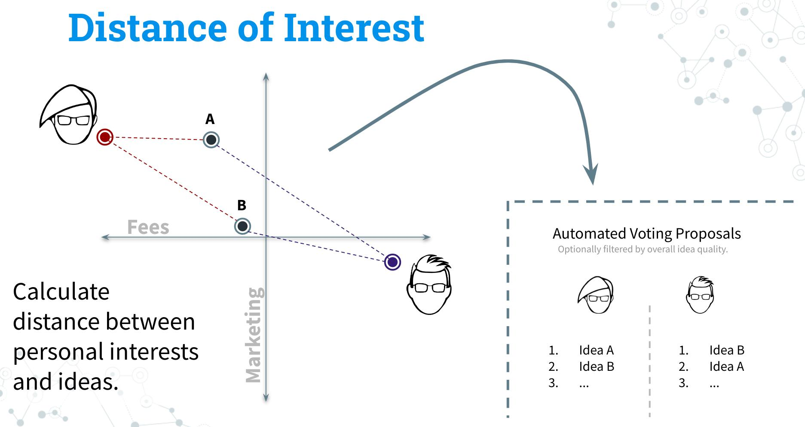

About Cardano
Cardano is a proof-of-stake blockchain platform: the first to be founded on peer-reviewed research and developed through evidence-based methods. It combines pioneering technologies to provide unparalleled security and sustainability to decentralized applications, systems, and societies.
The development of the Cardano follows a specific roadmap number of development phases named after influential historic persons. After the current phase Basho which focuses on scaling, the next development phase will be Voltaire which is all about governance.
About Voltaire and Cardano Governance
Voltaire is already starting to manifest, mainly in the form of Project Catalyst, a community driven effort to drive the development of Cardano over recurring funding periods, that allows developers to submit projects and holders of the Cardano token ADA to vote for them.
The Challenge with Voting
 The number of proposed projects on Project Catalyst is rapidly increasing from one funding round to the next. Additionally the proposals are becoming more complex, so that voters do face a steep challenge when trying to stay on top of all the proposals. Clearly this is a scaling challenge that needs to be addressed.
The current solution is to build a cascade of community advisors and representatives that assess the individual proposals or even vote on behalf of delegators to make it easier to vote. Delegate Representatives (dReps) who can vote on behalf of those who delegate their voting power are the latest initiative to move from direct to a form of liquid democracy.
Still voters are called to vote for hundreds of proposals during every funding round, which is hardly sustainable in the long run since it runs the risk of voter fatigue and opens up attack vectors for well organized minorities to control majorities through their voting. Clearly not a desireable state for a distributed blockchain.
On the other hand, delegating votes to representatives has it’s own problem, as a rich history of delegative democracy shows. While Cardano is a trustless blockchain, delegating voting power do individuals necessiates trust into them using their voting power as intended by their delegators. This has already raised red flags within the Cardano community.
So how can Cardano move forward in the light of this situation? The solution proposed here leverages the technology and opens up the possibility for trustless voting by delegating votes to algorithms.
Cardano Smart Voting
Cardano Smart Voting is a small kick-off-funded contribution to address the scaling of governance by collecting ideas - and ideally kickstart an implementation project - for the introduction of algorithmic smart voting.
Smart Voting Central Concept
 The central idea of smart voting is, that every topic / proposal to be voted on can be classified using a number of descriptors that describe (possible) opposing interests of voters. This information can then be used to parametrize algorithms that will vote on proposals according to the interest of the voter using the distance between user interest and proposal properties.
Let’s go through an example: Let’s say such an opposing interest descriptor (OID) is ‘Fees’. Pool operators and developers will want to have high fees on the blockchain because this means higher income for them. On the other hand, merchants and users will want to see low fees to be able to make cheap transactions (there are other considerations like security of course, but let’s leave those aside for a moment). Similar OIDs could be ‘NFT’, ‘Marketing’, ‘Gaming’, ‘Sidechains’, ‘Security’ etc.
Now each project that is put up to vote can be classified according to these descriptions of opposing interest. Voters can then simply declare their interest and immediately find out which projects they’d support, which are neutral and which they’d oppose. A hypothetical voter could for example support NFT projects for gaming or projects the enhance the security of the L1. It would be literally possible to vote for thousands of proposals in minutes.
In addition this would open up a wide vista of possibilities that traditional voting simply cannot offer due to lack of capability. For example, once a user stated his preference, he could vote constantly, not distinct voting days would be necessary. Voting during absence, even after death would become possible, the use of different classification algorithms, ML and possibly AI systems and much more.
Obviously such visionary possibilities come with their own set of challenges. I’ll briefly touch on the main issue below.
More about the central idea can be found in the presentation that was submitted with the Project Catalyst proposal:
The Challenge
Before we can go about the more visionary things that I laid out above, we need to acknowledge the Central Challenge of this proposal. Instead of the need for trust in delegatees like the dReps mentioned above or elected politicians in modern democracies, we need to trust first and foremost the classification information of the projects / proposals that are put up for voting.
Even without any algorithms, having good OIDs would make it possible for voters to use those in a similar fashion as currently voting advice applications - just answer a couple of questions and get an ordered list of projects according to your interests.
However reliable, objective classifications of proposals and even the selection of suitable OIDs themselves must be a transparent community effort or it might become an attack vector (thought arguably a much smaller and indirect one in comparison to direct delegation). Consequently setting up such a system takes a big community effort and the involvement of professionals with experience in the setup of community driven democratic discourse-processes. In a later stage also data scientists need to be involved to identify the OIDs that explain the majority of voting differences, find appropriate algorithms for voting and to parametrize them.
Current Status: Team wanted
In order to move forward, a large, competent and sufficiently financed team is necessary as well as the general support of the Project Catalyst community and probably also IOHK directly. While funding could possibly be found via Project Catalyst, so far there was not enough interest in this idea to move forward with a larger implementation proposal.
If you are interested please do contact me! I’m also happy to contribute any or all of the things laid out here to other projects that are out to achieve similar goals.